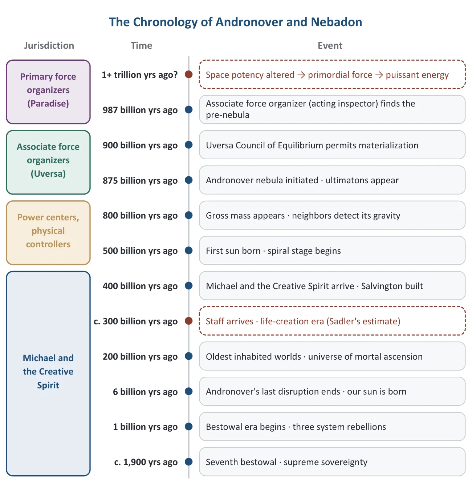

Original : Annexe IX, La chronologie des univers locaux (pp. 293–306)
Les annexes précédentes exposaient les principes de la croissance expérientielle ; celle-ci observe ces principes se déployer, étape par étape, dans la vie d’un seul univers local. Sadler prend pour échantillon Nébadon, l’univers que le Livre d’Urantia décrit le plus complètement, et rassemble des dates dispersées dans les fascicules en une seule ligne continue, depuis la première altération de la puissance d’espace jusqu’au lointain avenir de lumière et de vie. L’organisation physique, la création de la vie, les effusions et les rébellions, ainsi que les stades que le Fils et l’Esprit traversent ensemble, deviennent un seul long récit.
Où commence l’histoire d’un univers local ? Sadler soupçonne que même Uversa ne possédait aucune archive des origines physiques les plus lointaines de Nébadon, puisque le Conseil d’Équilibre d’Uversa devait être informé séparément lorsque les conditions d’une région de l’espace devenaient favorables à la matérialisation. De telles archives, raisonne-t-il, se trouveraient plus probablement dans les archives du Paradis tenues par les Maitres Architectes, car ce sont les Maitres Architectes qui planifient la création matérielle et supervisent les organisateurs de force primaires.
Il réduit la préhistoire de la nébuleuse d’Andronover à trois mouvements. D’abord, peut-être il y a bien plus de mille milliards d’années, une partie de la puissance d’espace de l’Absolu Non Qualifié subit un changement qui la rendit capable de réagir à la simple présence des organisateurs de force primaires. Ensuite, lorsque ces organisateurs pénétrèrent plus tard dans ce secteur d’Orvonton, leur seule présence passive suffit à transformer la puissance d’espace en force primordiale. Enfin, après un nouvel intervalle, ils entreprirent le travail actif de transmuer la force primordiale en énergie primaire, ou énergie puissante.
Cette énergie primaire ou énergie puissante ne réagit pas en premier lieu nettement à l’attraction gravitationnelle du Paradis, bien que sa masse agrégée et sa direction dans l’espace soient probablement réactives au groupe collectif des influences absolues opérant du bas Paradis.42:2.11
À ce stade, les étudiants des étoiles des univers voisins ne pouvaient absolument rien détecter. Ce qu’un observateur humain appellerait une masse n’apparait qu’après le stade ultimatonique, lorsque les électrons et les atomes viennent à l’existence.
Il en résulte une scène fascinante. Les organisateurs de force primaires partent du Paradis et travaillent à l’insu des autorités du superunivers, qui ne « découvrent » que plus tard ce qu’ils ont fait. Il y a quelque 987 milliards d’années, un organisateur de force associé remplissant les fonctions d’inspecteur d’Orvonton découvrit la pré-nébuleuse d’Andronover et la signala aux Anciens des Jours [57:1.3]. Puis, il y a 900 milliards d’années, le Conseil d’Équilibre d’Uversa accorda la permission de commencer la matérialisation [57:1.4]. Sadler voit dans la date de ce permis la limite à laquelle la juridiction passa des organisateurs de force primaires du Paradis aux organisateurs de force associés d’Uversa.
Une fois le permis délivré, celui qui avait fait la découverte quitta Uversa avec son personnel, et il y a 875 milliards d’années la nébuleuse d’Andronover fut officiellement inaugurée. La façon dont on met une nébuleuse en rotation est d’une simplicité surprenante.
Seule la présence de l’organisateur de force et de son personnel de liaison était nécessaire pour déclencher le tourbillon d’énergie qui devait finalement se transformer en ce vaste cyclone spatial.57:1.6
Les organisateurs de force s’éloignent à angle droit par rapport au plan du disque qu’ils veulent mettre en rotation. Sadler considère que la désignation 876 926 est le numéro de série de la nébuleuse dans Orvonton. Les organisateurs de force associés convertissent l’énergie puissante en énergie de gravité, et les ultimatons naissent. Dans l’espace extérieur, ils restent auprès d’une nébuleuse jusqu’au bout, mais à l’intérieur d’un superunivers la coutume veut qu’ils se retirent à un certain moment et remettent le travail aux centres de pouvoir et aux contrôleurs physiques de la région.
Sadler décrit l’évolution physique d’un univers local comme le défi technique accepté par les centres de pouvoir et les contrôleurs physiques. Leur tâche est d’amener la matière à l’équilibre et de montrer que le mental peut maitriser l’énergie. Il pense que tous les centres de pouvoir finalement affectés à Nébadon (100 du rang de l’univers local, 1 000 du rang de la constellation, 10 000 du rang du système) sont peut-être venus à Andronover dès le début, et, à partir des 500 000 maitres contrôleurs physiques de Satania, il arrive à environ cinq milliards pour l’ensemble de l’univers local. Les deux chiffres sont des estimations.
Ces êtres travaillèrent seuls depuis environ 875 milliards d’années jusqu’à l’arrivée du Fils Créateur il y a 400 milliards d’années. Durant cet intervalle, l’énergie fut organisée depuis le stade ultimatonique, en passant par le stade électronique, jusqu’à la matière atomique. Lorsque la masse grossière apparut il y a environ 800 milliards d’années, les créations voisines en prirent conscience par des mesures de gravité. La nébuleuse attira alors de l’énergie jusqu’à atteindre sa masse maximale, et, avec la naissance de son premier soleil il y a 500 milliards d’années, elle entra dans la phase spirale de dispersion vers l’extérieur. C’est pendant cette deuxième phase que Micaël arriva avec l’Esprit Créatif.

Micaël atteignit la région d’Andronover il y a 400 milliards d’années [119:0.7]. Sa formation d’administrateur d’univers avait déjà été achevée dans l’univers central, et l’Esprit qui devait devenir son consort avait reçu une éducation préliminaire à l’art de créer auprès des Esprits des circuits de Havona. Son autorité lui fut conférée par la Trinité du Paradis et confirmée par le Maitre Esprit d’Orvonton.
Cette action vaut titre de possession physique, un bail cosmique.21:3.1
Le mot « bail » mérite réflexion. Un Fils Créateur n’arrive pas en propriétaire de son univers. Comme un locataire à qui l’on remet une parcelle de terre, il doit la cultiver et, par l’expérience qu’il y acquiert, gagner lui-même sa souveraineté. À son arrivée, les centres de pouvoir et les contrôleurs physiques commencèrent à construire Salvington, la capitale, ainsi que les cent sièges des constellations ; ce n’est qu’il y a cinq milliards d’années que tous les sièges des systèmes furent achevés [57:3.8].
La venue de l’Esprit Créatif fixa la frontière de l’univers local. Tout ce qui se trouve dans la région de l’espace qu’elle reconnait comme sienne est Nébadon ; tout ce qui se trouve au-dehors ne l’est pas [41:0.1]. Combien de nébuleuses tombent alors dans cette région ? Sadler tente ici un calcul.
Andronover donna naissance à 1 013 628 soleils [57:4.8]. Sadler utilise la répartition des mondes habités de Satania comme étalon.
Parmi eux, il y en a seulement un qui comporte quatre planètes peuplées, tandis que quarante-six ont deux mondes habités.32:2.10
| Base | Fondement | Mondes habités issus d’Andronover | Déficit par rapport à dix millions | Nébuleuses nécessaires |
|---|---|---|---|---|
| Environ 1,1 monde par système physique | Les 619 mondes de Satania répartis sur 562 systèmes | environ 1 114 991 | 8 885 009 | neuf ou plus |
| Environ 0,5 monde par soleil | Les quelque 2 000 soleils de Satania, environ 1 000 mondes prévus | 506 814 | 9 493 186 | une vingtaine |
Dans un cas comme dans l’autre, Andronover ne peut à elle seule fournir les dix millions de mondes habités prévus pour Nébadon. Les fascicules eux-mêmes disent que Nébadon a été assemblé à partir de la progéniture de plusieurs nébuleuses [41:0.3]. Comme les nébuleuses diffèrent de taille, aucun dénombrement exact n’est possible.
Comment, alors, des nébuleuses d’origines différentes en vinrent-elles à graviter ensemble en un seul nuage d’étoiles de Nébadon ? Sadler nomme quatre facteurs : un minimum de mouvement spatial commun entre les nébuleuses dès le départ ; l’ajustement intelligent des centres de pouvoir et des contrôleurs physiques ; les attributs du Fils Créateur qui lui permettent de contrôler la matière ; et la présence spatiale et les pouvoirs physiques de l’Esprit Créatif, parmi lesquels l’antigravité. Il se représente l’Esprit, à cette époque, comme une sorte de « super-centre de pouvoir ».
Un Fils Créateur ne peut quitter son monde-siège avant l’époque où la stabilisation gravitationnelle du royaume a été effectuée par la matérialisation d’une énergie suffisante pour permettre aux divers circuits et systèmes de s’équilibrer par attraction matérielle mutuelle.32:2.5
Durant cette période, le Fils fournissait le modèle et l’Esprit le transformait en substance physique [34:0.3]. Leurs seuls conseillers étaient les 1 000 tertiaphins donnés par l’Esprit Infini. Il y a trois-cents milliards d’années, le personnel de Micaël arriva à Salvington, et le gouvernement d’Uversa reconnut Nébadon comme création physique [57:3.9].
Les fascicules ne disent pas quand l’ère de création de la vie commença. Tout ce qui est certain, c’est qu’elle vint après l’arrivée de Micaël, il y a 400 milliards d’années, et avant l’apparition des plus anciens mondes habités, il y a 200 milliards d’années. Comme dans d’autres annexes, Sadler prend le point médian, à peu près 300 milliards d’années.
Avec l’ouverture de cette ère, le statut du Fils et celui de l’Esprit changent ensemble. Le Fils entre dans la souveraineté conjointe de vice-gérance, et l’Esprit acquiert des attributs personnels et devient l’Esprit-Mère de l’Univers. Cette personnalisation est un don de la Déité du Paradis conféré par l’intermédiaire du Maitre Esprit d’Orvonton [17:6.7]. Dès lors, l’Esprit laisse derrière elle le travail d’organisation physique et fonctionne comme créatrice spirituelle et comme source du mental de l’univers local.
La création se poursuit de Gabriel, la Radieuse Étoile du Matin, au Père Melchizédek et à l’ordre des Melchizédeks, puis aux Vorondadeks, aux Lanonandeks, aux Porteurs de Vie, aux Brillantes Étoiles du Soir, aux Archanges, et aux susatias et univitatias. Après eux, le Fils seul produit les Adams et les Èves des systèmes, et l’Esprit seul produit les armées angéliques. Sadler souligne que ce qui maintient l’unité d’un tel univers n’est ni la seule présence de l’Esprit ni une simple cohésion physique. Un vaste réseau de lignes de communication, de circuits d’énergie et de canaux de pouvoir le soude en une seule unité administrative [41:1.1].
Il y a deux-cents milliards d’années, les plus anciens mondes habités vinrent à l’existence, et Nébadon s’éleva à un nouveau niveau.
Maintenant, le mécanisme universel parachevé de Nébadon commence à fonctionner pour la première fois, et la création de Micaël est enregistrée sur Uversa en tant qu’univers d’habitation et d’ascension progressive de mortels.57:3.11
Pendant ce temps, l’évolution physique d’Andronover se poursuivait. À partir d’il y a 75 milliards d’années, des soleils furent produits en grand nombre durant cinquante milliards d’années, et, entre huit et six milliards d’années avant notre époque, la nébuleuse traversa ses dernières éruptions. Sadler soulève ici une question : lorsque vinrent les derniers bouleversements, bon nombre de mondes devaient déjà être habités ; leurs peuples furent-ils transportés sur de nouveaux mondes par la technique de dématérialisation [51:2.3] ? Les fascicules sont muets sur ce point.
Notre propre soleil vint à l’existence il y a six milliards d’années, vers la fin de cette dernière dislocation. L’histoire propre d’Urantia commença il y a environ un milliard d’années, la vie y fut implantée il y a 550 millions d’années, et les êtres humains apparurent il y a environ un million d’années, lorsque la planète fut enregistrée comme monde numéro 606 de Satania.
L’ère d’effusion de Micaël commença il y a environ un milliard d’années.
Ses effusions ont eu lieu à des intervalles d’environ cent-cinquante-millions d’années, la dernière ayant eu lieu sur Urantia il y a dix-neuf-cents ans.119:0.7
Sadler met cette durée en regard des deux-cents milliards d’années écoulées depuis les plus anciens mondes habités. L’ère d’effusion représente un demi pour cent de ce temps, l’équivalent d’environ six semaines dans une vie humaine de cent ans. Pourtant, les trois rébellions systémiques de Nébadon tombent toutes en son sein : la rébellion de Palonia il y a environ 850 millions d’années, la rébellion dans le système 87 de la constellation 61 il y a environ 600 millions d’années, et la rébellion de Lucifer dans Satania il y a deux-cent-mille ans. Sadler pense que la deuxième doit être le soulèvement au cours duquel Lanaforge, en tant que Souverain de Système assistant, prit les rênes du gouvernement [45:2.3].
Pourquoi un univers qui n’a connu aucune rébellion systémique pendant deux-cents milliards d’années en connaitrait-il trois en un seul milliard ? Sadler se demande si l’ère d’effusion ne serait pas une épreuve finale, une saison d’instabilité temporaire qu’un univers local traverse avant de parvenir à une souveraineté établie. Il ajoute pourtant avec franchise que, s’il est sûr que les deux faits sont liés de façon significative, il ne sait pas quelle est cette relation.
Le Livre d’Urantia divise en sept stades aussi bien la souveraineté d’un Fils Créateur [21:3.5–11] que la carrière d’un Esprit-Mère de l’Univers [17:6.3–10]. Placés côte à côte et ajustés à la chronologie de Sadler, ils se présentent ainsi.
| Stade | Fils Créateur | Esprit Créatif | Époque dans Nébadon |
|---|---|---|---|
| 1 | Souveraineté initiale de vice-gérance | 3. Création physique | arrivée, il y a 400 milliards d’années |
| 2 | Souveraineté conjointe de vice-gérance | 4. Ère de création de la vie (personnalisation) | il y a environ 300 milliards d’années (estimation de Sadler) |
| 3 | Souveraineté croissante de vice-gérance | — | ère d’effusion, depuis environ un milliard d’années |
| 4 | Souveraineté suprême | 5. Âges postérieurs à l’effusion (reconnue comme égale) | depuis un peu plus de 1 900 ans |
| 5 | Souveraineté suprême croissante | — | quand la plupart des mondes seront ancrés dans la lumière et la vie |
| 6 | Souveraineté trinitaire | 6. Âge de lumière et de vie | quand tout l’univers local sera ancré |
| 7 | Souveraineté non révélée | 7. La carrière non révélée | au-delà du présent âge de l’univers |
Le moment où Micaël, ayant achevé sa septième effusion, entre dans la souveraineté suprême est aussi le point où les deux carrières se rejoignent.
À cette occasion, et devant les administrateurs de l’univers rassemblés, le Fils Créateur triomphant élève l’Esprit-Mère de l’Univers à la cosouveraineté et reconnait l’Esprit consort comme son égal.17:6.8
L’histoire de Nébadon postérieure à l’effusion n’a pas encore deux mille ans. D’après le registre le plus récent, l’univers compte 3 840 101 mondes habités, moins de quarante pour cent des dix millions prévus [32:2.9]. Satania est un peu plus avancé avec 619 mondes, environ soixante-deux pour cent de son quota. Si l’on ajoute les trente-six planètes en attente d’implantation de la vie et les près de deux-cents qui devraient être prêtes d’ici quelques millions d’années, on arrive à un total d’environ 850 [49:0.3]. À en juger par le rythme des deux-cents derniers milliards d’années, Sadler estime que l’implantation de la vie se poursuivra encore pendant des centaines de milliards d’années, de sorte que l’ancrage de tout Nébadon dans la lumière et la vie est loin d’être imminent.
À un endroit, Sadler écrit « Polonia » pour le premier système rebelle, mais les fascicules écrivent Palonia [119:2.5]. La moyenne de 1,09363 qu’il donne pour la répartition des mondes de Satania ne correspond pas à 619 divisé par 562 (environ 1,10) ; comme il arrondit aussitôt à 1,1 pour son calcul, la conclusion n’en est toutefois pas affectée. Le chiffre de quelque deux mille soleils, qu’il attribue à 41:2.1, ne s’y trouve pas, mais en 41:3.1.